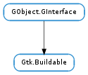

| add_child(builder, child, type) | |
| construct_child(builder, name) | |
| custom_finished(builder, child, tagname, data) | |
| custom_tag_end(builder, child, tagname, data) | |
| custom_tag_start(builder, child, tagname) | |
| get_internal_child(builder, childname) | |
| get_name() | |
| parser_finished(builder) | |
| set_buildable_property(builder, name, value) | |
| set_name(name) |
None
None
Bases: GObject.GInterface
Gtk.Buildable allows objects to extend and customize their deserialization from Gtk.Builder UI descriptions. The interface includes methods for setting names and properties of objects, parsing custom tags and constructing child objects.
The Gtk.Buildable interface is implemented by all widgets and many of the non-widget objects that are provided by GTK+. The main user of this interface is Gtk.Builder. There should be very little need for applications to call any gtk_buildable_... functions.
An object only needs to implement this interface if it needs to extend the Gtk.Builder format or run any extra routines at deserialization time
| Parameters: |
|
|---|
Adds a child to buildable. type is an optional string describing how the child should be added.
| Parameters: |
|
|---|---|
| Returns: | the constructed child |
| Return type: |
Constructs a child of buildable with the name name.
Gtk.Builder calls this function if a “constructor” has been specified in the UI definition.
| Parameters: |
|
|---|
This is similar to Gtk.Buildable.parser_finished () but is called once for each custom tag handled by the buildable.
| Parameters: |
|
|---|
This is called at the end of each custom element handled by the buildable.
| Parameters: |
|
|---|---|
| Returns: | True if a object has a custom implementation, False if it doesn’t. |
| Return type: | bool, parser: GLib.MarkupParser, data: object |
This is called for each unknown element under <child>.
| Parameters: |
|
|---|---|
| Returns: | the internal child of the buildable object |
| Return type: |
Get the internal child called childname of the buildable object.
| Returns: | the name set with Gtk.Buildable.set_name () |
|---|---|
| Return type: | str |
Gets the name of the buildable object.
Gtk.Builder sets the name based on the Gtk.Builder UI definition used to construct the buildable.
| Parameters: | builder (Gtk.Builder) – a Gtk.Builder |
|---|
Called when the builder finishes the parsing of a Gtk.Builder UI definition. Note that this will be called once for each time Gtk.Builder.add_from_file () or Gtk.Builder.add_from_string () is called on a builder.
| Parameters: |
|
|---|
Sets the property name name to value on the buildable object.